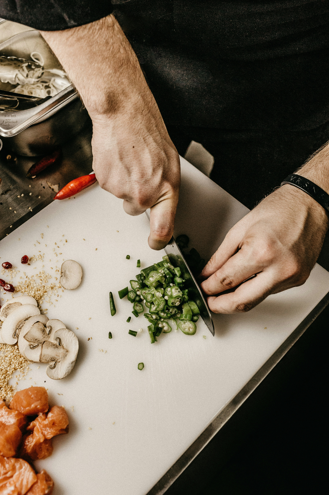

Welcome to Da Kine Grindz by Imi — a restaurant inspired by my lifelong love for food, cooking, and making people happy through good grindz. This website is the first step in bringing my dream to life. Cooking is something I do every day, and seeing others enjoy my food motivates me to keep going.
What You’ll Find Here
- Our menu featuring fresh, satisfying meals
- Photos of our dishes and the restaurant vibe
- Information about our hours and location
- Updates as Da Kine Grindz continues to grow
Featured Dish
